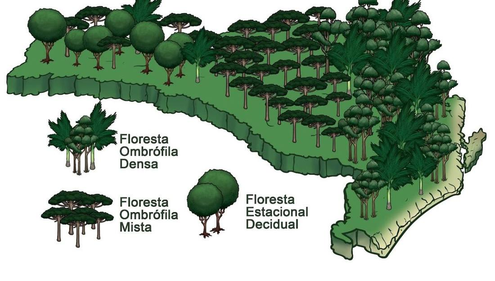

Inventário Florestal
Instituição Responsável:
Universidade Regional de Blumenau (FURB)
Coordenador:
Prof. Dr. Alexander Christian Vibrans
Objetivo:
Inventário e monitoramento dos estoques de biomassa e diversidade espécies das florestas catarinenses
Aqui estão reunidos os trabalhos de monitoramento do desenvolvimento das florestas; realizamos os levantamentos de dados em campo, o processamento dos dados levantados e do material botânico coletado nos laboratórios da FURB, bem como a análise e publicação dos resultados destas análises.
Acesse a metodologia e entenda cada estudo realizado pela equipe do Inventário Florestal do FlorestaSC:

Nossa Área de Estudo

Inventário dos Remanescentes Florestais

Florística (Herbário FURB)

Biometria

Diversidade genética

Levantamento Socioambiental
O FlorestaSC possui diversos resultados e produtos gerados. Confira nos links abaixo.
FlorestaSC
florestasc@furb.br 47 3221-6100
Página migrada de floresta.sc.gov.br.